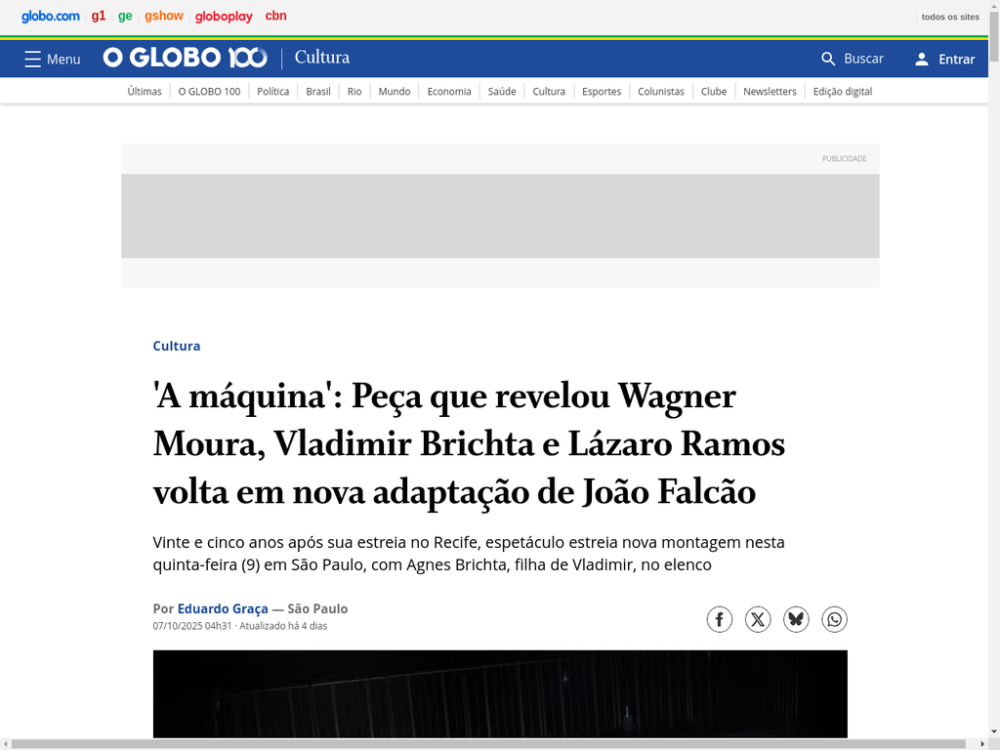

Matéria Especial
'A máquina': Peça que revelou Wagner Moura, Vladimir Brichta e Lázaro Ramos volta em nova adaptação de João Falcão
Análise aprofundada sobre o retorno da peça, contextualizando sua importância histórica e a nova montagem. Destaque para o encontro emocionante entre os oito Antônios (elenco original e novo elenco).
Destaques:
Ler matéria completa →
- Cenário de mais de 600kg com palco giratório
- Agnes Brichta, filha de Vladimir, como Karina
- Gustavo Falcão retorna como co-diretor
- Filme em 2006 com Paulo Autran e Mariana Ximenes